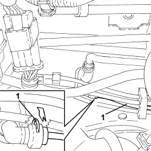
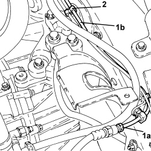
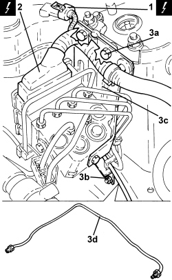

1820B45 RIGID DELIVERY PIPE FROM MASTER CYLINDER (PUMP) - R.R. FOR RIGHT HAND DRIVE VERSIONS
- Path
- Procedures > 18 CLUTCH UNIT > 1820 CLUTCH RELEASE CONTROLS > 1820B HYDRAULIC CLUTCH SYSTEM > 1820B45 RIGID DELIVERY PIPE FROM MASTER CYLINDER (PUMP) - R.R. FOR RIGHT HAND DRIVE VERSIONS
- Kind
- repair procedure (removal / refitting; the operation number is the code)
- Applies to
- engines: 2.2 JTS; all production periods
- Interactive page
- https://sloeber94.github.io/elrnDB-aBrrSpdr/en/#/946004004
Applies to: engines: 2.2 JTS; all production periods
 Removing
Removing
 Refitting
RefittingOp. 5530B52 BATTERY SUPPORT/DRIP TRAY - R.R
Op. 1016A10 SOUND-PROOFING COVER - R.R
- Using a suitable syringe, draw off the brake/clutch fluid from the reservoir.
- Unscrew the engine coolant reservoir fixing nuts and move it aside.
1. Lift up the clip and disconnect the rigid pipe from the master cylinder from the intermediate connector.
- Open the retaining clips securing the rigid pipe to the engine compartment bulkhead.

Applies to: engines: 2.2 JTS; all production periods
1. Undo the connector (1a) connecting the rigid pipe (1b) to the flexible pipe.
2. Undo the clips retaining the rigid pipe to the body.

Applies to: engines: 2.2 JTS; all production periods
1. Disconnect the electrical connection for the brake-clutch fluid level switch.
Description | Connector | |
|---|---|---|
1 | Brake fluid level sensor (switch) |
2. Disconnect the electrical connection for the A.B.S. control unit.
Description | Connector | |
|---|---|---|
2 | ABS control unit |
3. Undo the bolts (3a), loosen the nut (3b) securing the A.B.S. control unit mounting (3c) and move it as necessary in order to remove the rigid pipe (3d).

Applies to: engines: 2.2 JTS; all production periods
Refitting
Removing- Place the rigid pipe in position and close the retaining clips on the body and the engine compartment bulkhead.
- Refit the A.B.S. control unit mounting in its seat and secure it with the bolts and nut.
- Disconnect the electrical connection for the A.B.S. control unit.
- Connect the electrical connection for the brake-clutch fluid level switch.
- Connect the rigid pipe to the flexible pipe and tighten the connector.
- Connect the rigid pipe to the intermediate connector and secure it using the clip.
- Place the engine coolant supply reservoir back in its housing and secure it using the nuts.
Op. 5530B52 BATTERY SUPPORT/DRIP TRAY - R.R
Op. 0010T64 BRAKE AND/OR CLUTCH FLUID CHECK LEVEL AND TOP UP AS NECESSARY